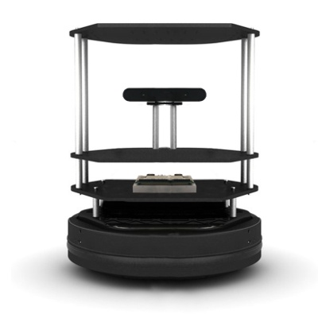

Independently created TurtleBot demonstrations for robotics instruction, illustrating autonomous navigation, obstacle avoidance, replanning, and dynamic-obstacle interaction.
These demonstrations were created as instructional material to help students visualize how a ROS-based mobile robot behaves under progressively more challenging navigation scenarios.
The demonstrations were designed to show students how mobile-robot navigation changes as the environment becomes more constrained or less predictable.
Rather than presenting navigation only through diagrams or simulation, the videos connect map-level planning, local obstacle avoidance, and real robot motion in physical spaces.
The demonstrations were recorded using physical TurtleBot platforms in indoor navigation environments.

The TurtleBot autonomously navigates toward a goal while negotiating a narrow doorway and surrounding obstacles.
The scenario demonstrates basic autonomous goal navigation together with local obstacle avoidance in a constrained doorway.
A large obstacle blocks the expected route, requiring the robot to identify and traverse a narrow free-space corridor.
This scenario emphasizes local obstacle avoidance and navigation through constrained free space.
When the expected route becomes unavailable, the robot generates and follows an alternative route toward the goal.
The demonstration shows the distinction between local avoidance and global path replanning when the original route is blocked.
A second TurtleBot moves through the navigation area and interferes with the primary robot's route.
The robot temporarily freezes under the changing obstacle configuration but avoids collision and ultimately reaches the destination. The behavior provides a useful example of practical limitations in dynamic navigation.
The demonstrations intentionally capture physical robot behavior rather than only idealized simulation results.
Narrow clearances, unexpected blockages, changing obstacle positions, temporary freezing, and replanning behavior provide useful examples of how navigation systems behave in real indoor environments.